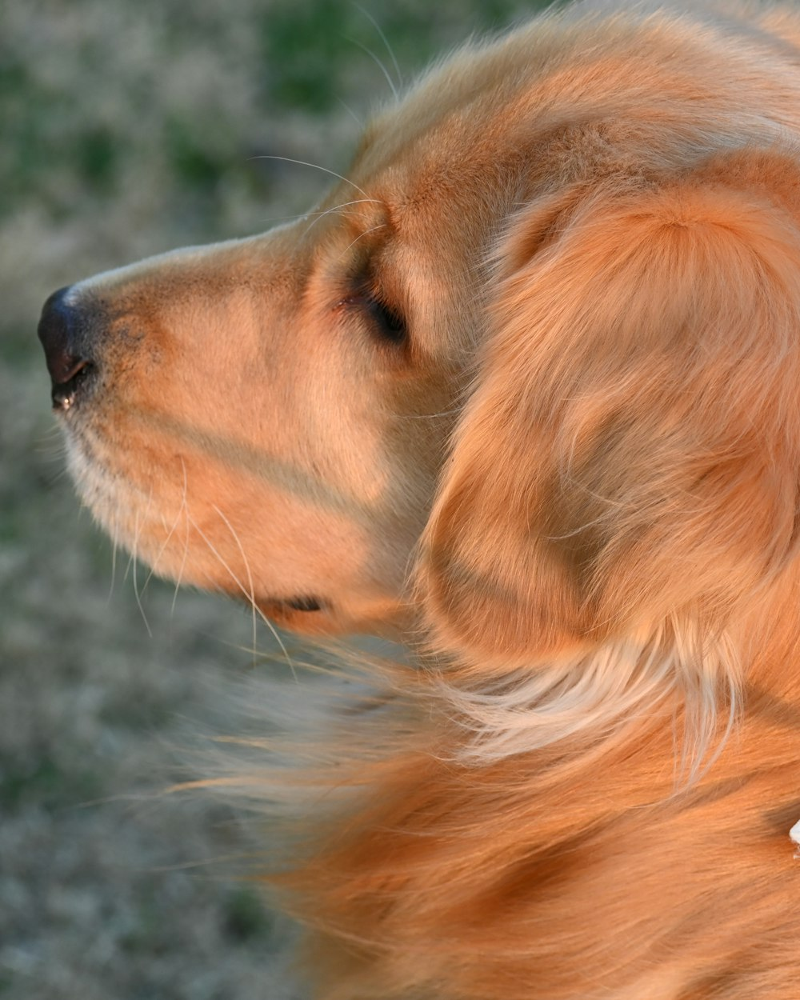
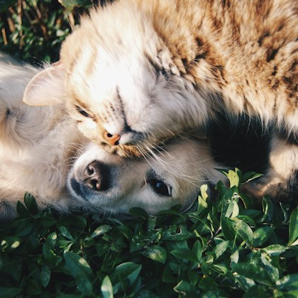
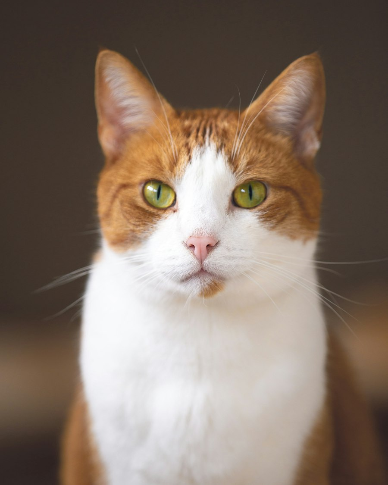
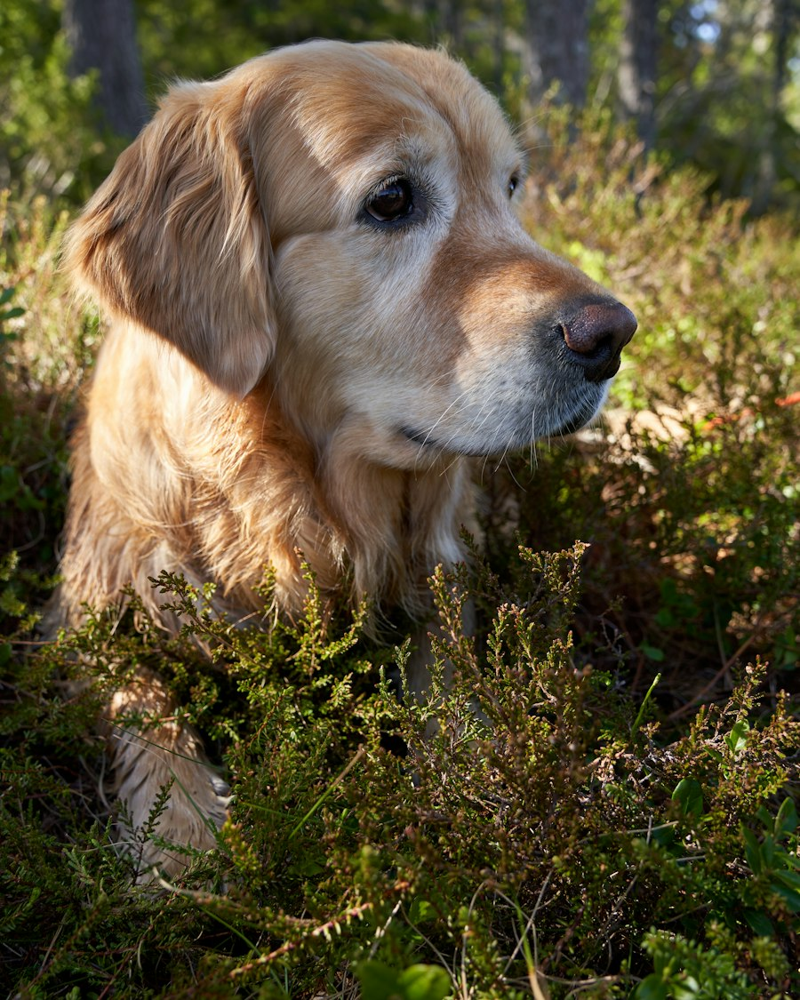
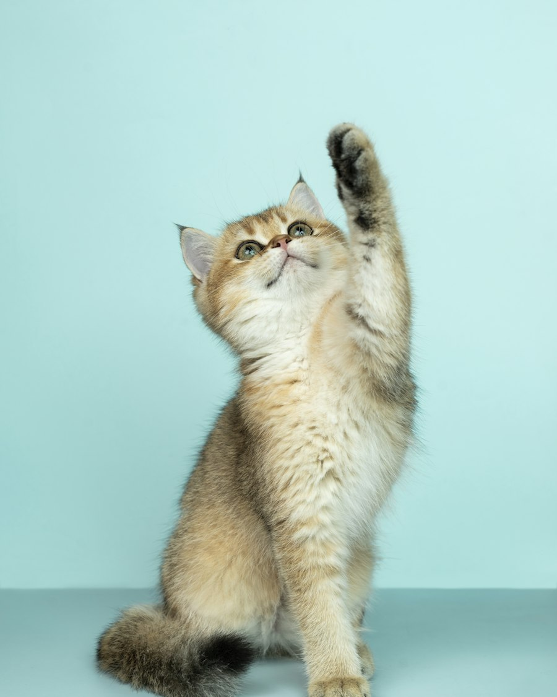

Adoção responsável e acessível
Todo bicho merece um lar sem barreiras.
O Sem Barreiras Pet aproxima você de cães e gatos resgatados por ONGs e abrigos, com todas as informações de saúde às claras e um site que qualquer pessoa consegue usar: com leitor de tela, só com o teclado ou do jeito mais confortável para você.
- Etapas até a adoção
- 4
- Nível de acessibilidade (WCAG)
- AA
- Uso só com teclado
- 100%


Ficha completa
vacinas, saúde e história
- Ficha de saúde completa
- Carteira de vacinação visível
- Visita agendada com o abrigo
- Navegação pelo teclado
- Compatível com leitor de tela
- Linguagem simples
- Acompanhamento após a adoção
Conheça os companheiros
Esperando por alguém como você.
-
Gentil
Nina
2 anosCocker Spaniel
Fêmea · Médio Conhecer a Nina
-

BrincalhãoSimba
1 anoGato SRD
Macho · Pequeno Conhecer o Simba
-

LealBento
8 anosGolden Retriever
Macho · Grande Conhecer o Bento
-

FilhoteMel
4 mesesGata SRD
Fêmea · Pequeno Conhecer a Mel
Os pets desta página são exemplos fictícios para demonstrar a ficha do animal.
O caminho
Adoção feita com cuidado de verdade.
Sem pressa e sem pegadinhas. Você decide no seu tempo e o abrigo acompanha cada etapa, porque um lar é para a vida toda.
Ver o passo a passo completo-
Conte sobre a sua casa
Crie sua conta e fale da sua rotina, do espaço e do tipo de companhia que você procura.
-
Conheça o seu par
Veja a ficha completa de cada animal: temperamento, vacinas, doenças e cuidados.
-
Visite e decida com calma
Agende uma visita ao abrigo, converse com a equipe e só então confirme a adoção.
Para todas as pessoas
Um site pensado para todos.
Acreditamos que adotar deve ser simples para qualquer pessoa. Por isso este site foi construído com:
- Navegação completa pelo teclado, sem precisar do mouse.
- Compatibilidade com leitores de tela em todas as páginas.
- Textos em linguagem simples e direta.
- Contraste de cores adequado para baixa visão.
- Formulários sem tempo limite e com instruções claras.